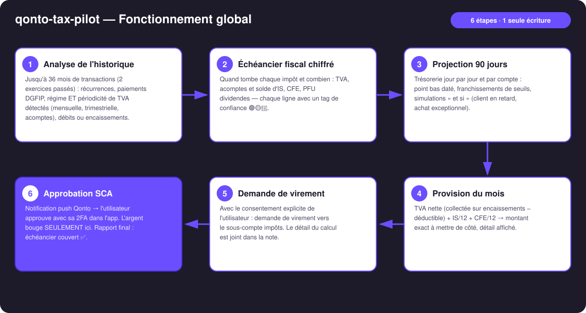
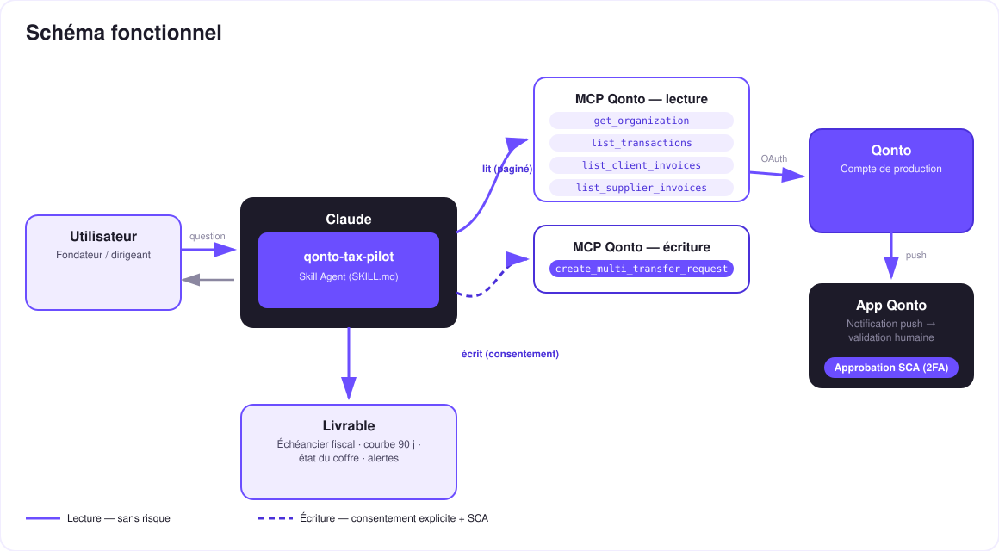

Prédire le fisc, puis mettre l'argent à l'abri — le copilote fiscal de ton compte Qonto.
La première cause de mort des TPE, ce n'est pas le manque de chiffre d'affaires — c'est la TVA déjà dépensée quand l'avis arrive. Le skill transforme le compte Qonto en copilote fiscal :
Quand tombe chaque impôt et combien — TVA, acomptes & solde IS, CFE, PFU — avec tag de confiance 🟢🟡🔵 par ligne.
Trésorerie jour par jour et par compte : point bas daté, seuils, simulations « et si ».
TVA nette du mois (sur encaissements si détecté !) + IS/12 + CFE/12 — détail complet affiché.
Demande de virement vers le sous-compte impôts — l'argent ne bouge qu'après l'approbation SCA dans l'app.
| Prérequis | Détail | Obligatoire |
|---|---|---|
| Compte Qonto production | Le skill s'adapte à toute organisation — get_organization d'abord, zéro donnée en dur | ✅ |
| MCP Qonto connecté | Connecteur officiel (claude.ai / Claude Desktop), login OAuth | ✅ |
| Sous-compte « impôts » | Créé une fois dans l'app (le MCP ne sait pas créer de compte). Détecté par son nom : taxe / tax / impôt / TVA | ⭕ recommandé — sinon calculs seuls |
| Historique ≥ 6 mois | En dessous : dégradation honnête (tags 🟡 + avertissement) | ⭕ |
| Société française à l'IS | Hypothèse par défaut, discours adapté sinon | ⭕ |

vat_payment_condition: "on_receipts" → la TVA suit les paiements reçus, pas les factures émisesvat_amount — annoncée comme plancher avec le nombre de débits non renseignésemitted_at vs settled_at), avoirs déduits de la collecte
Le modèle de sécurité, pas une limitation : la lecture est sans risque ; l'écriture exige le consentement explicite dans la conversation et ne produit qu'une demande. Seule la SCA (2FA) du titulaire, dans l'app Qonto, déplace l'argent. Ni Claude ni le MCP ne le peuvent.
| Échéance | Impôt | Estimation |
|---|---|---|
| Mensuelle ou trimestrielle ~15-24 (réel normal ; trim. si TVA annuelle < 4 000 €) | TVA CA3 | Médiane des paiements récents, affinée par collectée − déductible |
| Juillet 55 % + décembre 40 % | Acomptes TVA (simplifié — supprimé au 01/01/2027) | Dernière CA12 / historique |
| 15/03 · 15/06 · 15/09 · 15/12 | Acomptes IS (2571) | Acomptes passés, sinon IS N-1 ÷ 4 — aucun si IS N-1 < 3 000 € |
| 15/05 | Solde IS (2572) | IS N-1 estimé − acomptes |
| 15/06 (si ≥ 3 000 €) + 15/12 | CFE | Paiement de l'an dernier |
| Le 15 du mois suivant | Dividendes — le skill demande qui est l'actionnaire | Personne physique → PFU 30 % (2777) à provisionner · Holding (mère-fille) → pas de PFU, quote-part 5 % chez la holding — quasi rien ici. Jamais supposé |
| Sortie | Format | Quand |
|---|---|---|
| Réponse dans la conversation | Tableaux markdown (échéancier, provision, alertes) | Toujours — c'est la base |
| Dashboard interactif | Fichier/artifact HTML : courbe 90 j, échéancier ✅/⚠️, jauge du coffre | Si l'hôte affiche les fichiers (artifacts claude.ai, Claude Desktop, Claude Code) ; repli automatique sur les tableaux sinon |
| Note de la demande Qonto | Texte joint à la demande, visible à l'approbation SCA | À chaque provision créée |
La démo ≤ 3 min jointe à la PR suit le storyboard : problème → échéancier & projection → provision → approbation SCA filmée sur iPhone → dashboard final. Tournée en live sur un compte de production réel.
| Idée | Effort | Note |
|---|---|---|
| URSSAF/TNS pour les EURL | Moyen | Élargit la cible au-delà des SASU à l'IS |
| Modules pays Europe (DE · ES · IT · AT · NL · BE · PT) | Moyen | Qonto est paneuropéen ; v1 = France + détection du pays, v2 = un module calendrier par pays |
| Rappels d'échéances dans le calendrier (MCP calendrier détecté dynamiquement) | Faible | Multi-MCP optionnel, dans l'esprit du kickoff |
| Atterrissage IS de l'année en cours | Moyen | Réutilise le moteur de récurrences |
| Artifact interactif what-if (sliders) | Faible | Déjà maquetté (dashboard P12) |
decline_request après chaque test (request_type: "multi_transfers", pluriel)